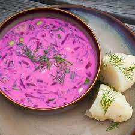
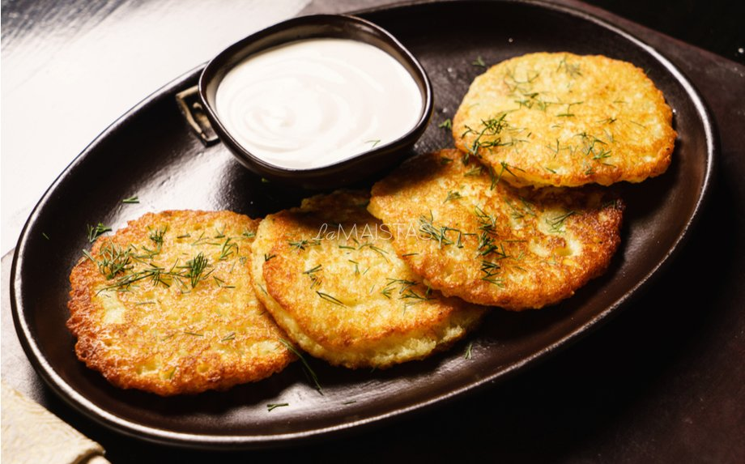

Lithuanians like to eat a lot and enjoy good food. Our traditional cuisine is rather simple, but has a variety of interesting dishes, many of them hearty and suitable for those cold Eastern European winters. Rye, potatoes, various meats, beetroots and turnips, mushrooms, berries, and diary products are often used as staple ingredients. More information here
Zeppelins

More Info
The name of Cepelinai come from their shape that resembles of a Zeppelin airship, cepelinai are typically around 10 - 20 cm long, although the size depends on where they are made: in the western counties of Lithuania cepelinai are made bigger than in the east. After boiling, the cepelinai are often served with sour cream sauce and bacon bits or pork rinds.
Find more on ZeppelinsŠaltibarščiai - Cold Borscht (Beetroot Soup)
Šaltibarščiai is a popular summer soup easily recognizable by its vivid pink color. It's made from hard-boiled eggs, cooked and shredded beets, fresh cucumbers, dill, and green onions. All the aforementioned ingredients are chopped and put into a pot, and then soured milk or kefir is added. The soup can be seasoned with salt and some pepper to taste. Šaltibarščiai is served cold, usually with hot boiled potatoes sprinkled with dill on the side. Sometimes a sliced hard-boiled egg is added into the plate as well. It's a great, refreshing meal on a hot summer day!
Find more on Beetroot soupŠBulviniai Blynai - Potato Pancakes
ulviniai blynai, or potato pancakes are one of the many Lithuanian dishes made from potatoes. Shredded potatoes are mixed with eggs, some flour, seasonings, and occasionally an onion or two. They are usually served with sour cream, and sometimes with mushrooms. These are so-very tasty, never mind the extra calories! Similar potato pancakes are also eaten in many other European and Middle Eastern countries.
Find more on Potato pancakes